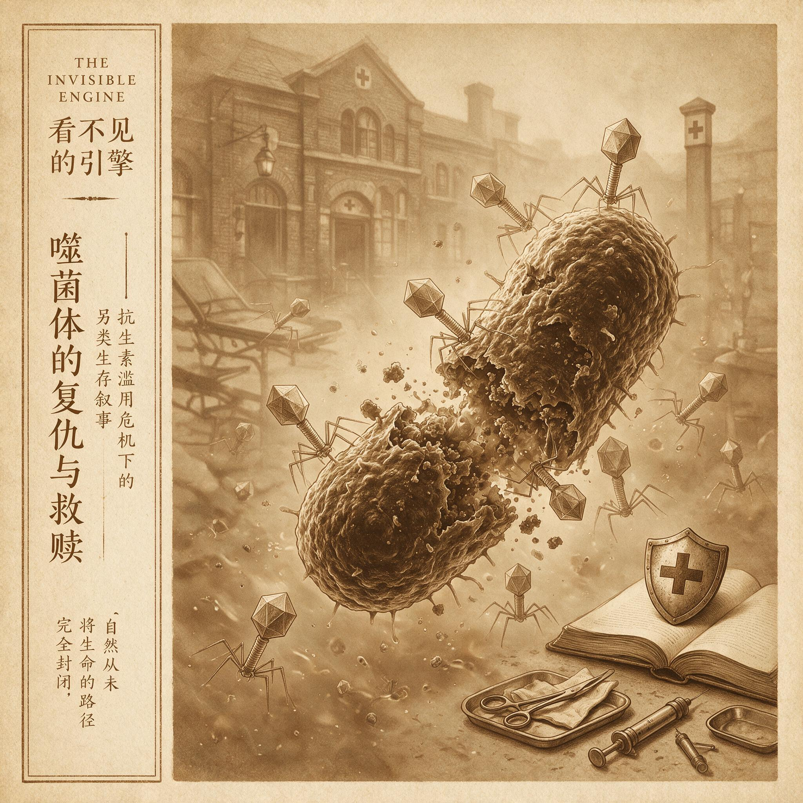

第 9 章
噬菌体的复仇与救赎
全球每年因耐药菌感染死亡的人数超过一百二十万，而能够正式用于临床对抗这些“超级细菌”的噬菌体疗法产品，在全球主要医药监管体系的批准清单上，数量是零。这个零不是自然的产物。它是将近一

个世纪的人类选择在时间中积累出的后果。
要理解这个零为什么存在，你必须回到1917年——不是回到日期，而是回到那个培养皿前。巴黎巴斯德研究所。法裔加拿大微生物学家费利克斯·德雷勒正面对一组寻常而又诡异的培养皿。在混浊的痢疾杆菌培养基表面，出现了一些完全透明的圆形斑点。它们大小不一，边缘清晰，仿佛有人用无形的消毒棉签在菌苔上精准地擦过。细菌在这些区域内彻底消失了，溶解了，像是遭遇了某种看不见的猎食者。
德雷勒不是一个容易激动的人，但他知道自己看到了什么。这些透明斑点的出现总是与病患粪便滤液的加入相关。滤液里有什么东西——某种比细菌更微小、能通过陶瓷滤器、能够自我增殖的东西——正在吞噬细菌。
他用了一个后来被载入医学史的名字来称呼它：bacteriophage，噬菌体。细菌的吞噬者。让我们暂时停留在那个培养皿前。你看到的那层混浊的菌苔，是数以百万计的痢疾杆菌堆积而成的。每一个透明斑点，都是一个噬菌体颗粒最初感染一个细菌、然后在其中复制数百次、最终撑破宿主、释放子代噬菌体、再感染周围细菌——如此反复，直到形成肉眼可见的无菌区——的结果。这是一场微型的、被压缩在琼脂表面上的战争。而德雷勒是第一个读懂这场战争的人。
但他不是第一个观察到透明斑点的人。英国细菌学家弗雷德里克·特沃特在1915年就描述过类似的现象，只是他的记录更为模糊，他的推论更为谨慎。科学史上常有这样的时刻：两个人几乎同时站在同一扇门前，但只有一个人推开了它。德雷勒推开了门，并且立即开始思考这扇门通向何处。
他的思维跳跃得很快。如果噬菌体能在培养皿里溶解细菌，为什么不能在病人体内做同样的事？次年，他便尝试用噬菌体悬液治疗一名垂危的痢疾患儿。患儿恢复了。
接着是更多的病例：霍乱、鼠疫、伤口感染。德雷勒相信，他找到了一种可以对抗所有细菌感染的特效“活药”——一种活的、能够自我增殖的、会追着细菌跑的抗菌武器。这个想法在当时并不疯狂。它只是太超前了。
让我们先建立直觉，再给名字。噬菌体是一种病毒——蛋白质外壳包裹着核酸，不能自己代谢，必须进入宿主细胞才能复制。噬菌体的宿主是细菌。每一种噬菌体通常只能感染一种或几种特定的细菌，这种特异性精确到令人咋舌的程度：某种噬菌体可能只能感染大肠杆菌的某一特定菌株，对同一物种的另一菌株完全无效。
这种特异性从何而来？来自噬菌体尾部纤维蛋白与细菌表面受体之间的分子识别。你可以把它想象成一把钥匙配一把锁——只有形状完全匹配，噬菌体才能吸附、注入核酸、启动复制程序。这把“锁”可能是细菌细胞壁上的某种糖蛋白、某种转运蛋白、某种荚膜多糖。不同的细菌菌株携带不同的表面分子，就像不同的房子安装不同的门锁。一种噬菌体只能打开一种锁。
这就是噬菌体疗法的生态学逻辑：为每种特定的细菌敌人，寻找其专属的病毒“刺客”。这不是广谱轰炸，而是精准狙击。
这个逻辑在两次世界大战期间找到了用武之地。在缺乏现代抗生素的东欧和苏联，细菌感染是军队和平民的大规模杀手。痢疾、霍乱、伤寒、伤口感染——这些在今天可以用抗生素控制的疾病，当时意味着高死亡率。噬菌体疗法被作为一种实用的、可规模化的应对方案推向前线。从波兰到格鲁吉亚，从莫斯科到斯大林格勒，噬菌体制剂被广泛使用。它们的形态在今天看来简陋得令人不安：装在普通玻璃瓶中的浑浊液体，或是压制成片剂，标签上简单地写着针对的细菌种类——“志贺氏菌噬菌体”、“葡萄球菌噬菌体”、“链球菌噬菌体”。
有些制剂是“噬菌体鸡尾酒”，混合了多种不同噬菌体以覆盖某一类致病菌的多种亚型。使用方法同样直接：口服灌入肠道对抗痢疾和霍乱，直接喷洒在伤口上对抗化脓性感染，甚至注射到腹腔和胸腔。大量病例报告记录了令人印象深刻的疗效。
这不是安慰剂效应——噬菌体确实在病人体内找到了它们的细菌宿主，在那些溃烂的伤口里、坏死的组织里、感染的肠道里，完成了它们四十亿年来一直在做的事：猎杀细菌。
位于格鲁吉亚首都的第比利斯噬菌体研究所，成为这场运动的心脏。这座研究所成立于1923年，在苏联时期扩建为全世界最大的噬菌体库。它的走廊里排列着陈旧的培养箱，铁锈斑驳的冰箱里存放着数千株噬菌体样本，档案柜里堆满了手写的病例记录和疗效统计。研究所的工作人员年复一年地从环境样本中分离新的噬菌体——从污水中、从河流里、从病人的排泄物中——筛选、培养、鉴定、混合成新的鸡尾酒制剂。
这是一项劳动密集型的工作。每一种噬菌体制剂都需要针对特定病原体进行筛选和验证。每一批产品都需要用活细菌进行效力检测。没有“万能噬菌体”，只有针对具体敌人的具体武器。这意味着在治疗开始前，必须先分离出致病菌，然后在噬菌体库中找到能裂解它的噬菌体——这个过程可能需要几天到几周。
但这正是噬菌体疗法的优势所在，也是它的问题所在。优势在于精确：它只杀目标细菌，不伤及肠道和皮肤上那些无害甚至有益的共生菌群。问题同样在于精确：它太精确了，精确到不符合工业化医学对标准化和规模化的要求。
然后，1940年代来了。青霉素在二战期间从实验室奇迹变成了大规模生产的药品。接着是链霉素、四环素、氯霉素——抗生素的黄金时代拉开帷幕。这些药物有一个噬菌体永远无法比拟的优势：广谱。一种抗生素可以杀死几十种不同的细菌。医生不需要先做细菌鉴定和药敏试验，就可以开出处方。制药公司可以在巨大的发酵罐里批量生产同一种分子，包装成标准的片剂或注射剂，销往全球。
这是工业化医学的胜利。标准化、规模化、可储存、可运输、利润丰厚。相比之下，噬菌体疗法显得笨拙、缓慢、不经济。它需要个体化匹配，需要持续更新噬菌体库以应对细菌的演化，需要复杂的冷链运输——噬菌体是蛋白质颗粒，高温会使其失活。而且，最关键的是，噬菌体是天然实体，不能申请物质专利保护。
而抗生素分子可以。这不是一个科学判断，这是一个商业判断。但它被包装成了科学判断。西方医学界迅速将噬菌体疗法边缘化。1940年代后期到1950年代，英文医学期刊上关于噬菌体疗法的文章急剧减少。美国医学协会和各大医学院将其视为“苏联的落后技术”。抗生素成为“现代”医学的标志，噬菌体则被归入医学史的注脚——一种曾经被尝试过、但被更先进的技术取代了的古老疗法。
这里有一个认知框架需要被解剖。抗生素的逻辑是“广谱轰炸”：用同一种化学武器扫荡战场，不分敌友地杀死所有敏感细菌。这种逻辑符合工业文明对效率的想象：一个标准化的产品，解决一大类标准化的问题。噬菌体的逻辑是“精准狙击”：为每一种敌人匹配特定的武器，保留战场上的友军和中立方。这种逻辑符合生态学对复杂系统的理解：干扰应该是局部的、特异的、可逆的。
效率逻辑压倒了生态学逻辑。不是因为前者在科学上更正确，而是因为前者在工业上更可行，在商业上更有利可图。但这个判断需要被进一步细化。
抗生素的胜利不仅仅是商业驱动。它们确实在某些方面更优越：使用方便——口服一片药对比注射定制化的噬菌体悬液；起效迅速——不需要先做细菌鉴定；效果可预测——同一批药物的效价是恒定的。
对于20世纪中叶的医疗体系来说，当时正忙于建立标准化诊疗流程、大规模医院、全民医保体系，抗生素完美地嵌入了这个正在工业化进程中的系统。噬菌体则要求系统为它改变：建立噬菌体库、培训专业人员、设计灵活的监管框架、接受个体化治疗的不确定性。系统不会为一种技术改变自己。技术必须适应系统，否则就会被淘汰。
在第比利斯，火种没有熄灭。噬菌体研究所继续运转，继续从污水中分离新的噬菌体，继续为苏联各加盟共和国的医院供应制剂。波兰的弗罗茨瓦夫免疫学与实验治疗研究所同样保留了噬菌体疗法的传统，持续发表临床研究数据。但这些工作被隔绝在铁幕的另一侧，被西方医学界系统性地忽视。语言的障碍——大部分文献以俄语或波兰语发表——进一步加深了这种隔绝。冷战的认知隔绝不是单向的。
西方科学家不相信苏联的研究质量，认为那些临床数据缺乏严格的随机对照试验。苏联科学家则认为西方的批评是意识形态偏见。双方都在用自己的标准衡量对方，都不愿意承认对方可能在某些方面是正确的。
然后，二十世纪走到了尾声。多重耐药菌开始出现。先是耐甲氧西林金黄色葡萄球菌，接着是耐万古霉素肠球菌，然后是耐碳青霉烯类肠杆菌——每一种都代表着一道抗生素防线被突破。细菌用它们四十亿年的演化智慧，对抗人类不到一个世纪前才开始使用的化学武器。它们交换耐药基因，加速演化，在医院的走廊里、重症监护室里、养老院的床单上，建立起耐药菌的帝国。全球每年因耐药菌感染死亡的人数，根据不同的估算方法，在七十万到一百二十七万之间。这个数字还在上升。
新型抗生素的研发管道几乎干涸——不是因为科学上不可能，而是因为商业上不划算。一种新抗生素从研发到上市需要十到十五年，耗资数十亿美元，而细菌可能在几年内就产生耐药性。制药公司纷纷退出抗生素领域。然后，人们重新想起了噬菌体。
这个“重新发现”的过程本身就很说明问题。它不是来自主流医学界的主动探索，而是来自绝望的患者和家属。那些被多重耐药菌感染、所有抗生素都无效、医生已经束手无策的病人，开始听说有一种“苏联时代的古老疗法”，开始寻找能够提供噬菌体制剂的机构。他们中的一些人去了第比利斯，带回了浑浊的液体瓶。另一些人联系了美国的少数研究者，那些在学术边缘坚持了数十年的科学家。
媒体的报道开始出现。一个个孤立的“奇迹康复”案例被讲述：一个被耐药性鲍曼不动杆菌感染、濒临截肢的患者，在接受了定制化的噬菌体鸡尾酒后，感染消退。一个患有囊性纤维化、肺部被耐药性铜绿假单胞菌长期定植的年轻女性，在吸入噬菌体雾化制剂后，肺功能显著改善。
这些案例是真实的，但它们不是临床试验。它们是同情性用药，是个案报道，是系统失败的缝隙里漏出的希望。而要将这种希望转化为可以大规模应用的疗法，需要跨越的障碍远比七十年前更加复杂。第一个障碍是科学上的。
细菌不会坐以待毙——它们也会演化出对噬菌体的抗性。噬菌体疗法不是一劳永逸的解决方案，而是一场持续的军备竞赛。需要使用噬菌体鸡尾酒来降低抗性出现的概率，需要持续从环境中分离新的噬菌体来对抗已经产生抗性的菌株，需要理解细菌和噬菌体之间共同演化的动力学。这不是“找到对的噬菌体就行”那么简单。
第二个障碍是监管上的。现有的药品监管体系是为化学药物设计的：标准化的分子，固定的剂量，明确的药代动力学参数。噬菌体不符合这套框架。它们是活的、可演化的、混合使用的、需要个体化匹配的。如何为一群会自我复制的病毒制定“剂量”？如何为一种需要根据细菌敏感性持续调整的“鸡尾酒”进行三期临床试验？监管机构不知道，制药公司不知道，研究者也在摸索。
第三个障碍是商业上的。一种个体化匹配的疗法，意味着每一个病人都可能需要不同的噬菌体组合。这无法实现大规模标准化生产，因此利润空间有限。
噬菌体是天然产物，不能申请物质专利，只能通过制备工艺和制剂配方来建立知识产权壁垒——但这种壁垒远不如化学分子专利坚固。大型制药公司没有动力投入这个领域。
第四个障碍是认知上的。七十年的边缘化，在医学界形成了根深蒂固的偏见。大多数医生在学校里只学到“噬菌体疗法是失败的尝试”，不知道第比利斯和弗罗茨瓦夫积累的临床经验，不知道现代分子生物学已经彻底阐明了噬菌体的作用机制。当患者或家属提出“能不能试试噬菌体”时，最常见的反应是困惑、怀疑或直接的否定。
这就是噬菌体疗法在二十一世纪的处境：科学上可行，临床上急需，但制度上几乎无法落地。在第比利斯，那座老旧的研究所仍然在运转。培养箱还在嗡嗡作响，冰箱里还保存着冷战时期分离的噬菌体株，档案柜里的手写记录已经发黄。工作人员仍然在从污水中分离新的噬菌体，仍然在制备鸡尾酒制剂，仍然在接待那些从世界各地飞来的绝望患者。他们坚持了将近一个世纪，不是因为这种坚持在商业上是明智的，而是因为它有效。
在波兰的弗罗茨瓦夫，研究所的临床试验数据继续积累。他们的研究显示，噬菌体疗法在某些类型的慢性感染——如骨髓炎、糖尿病足溃疡、假体相关感染——中具有独特的优势。这些感染通常涉及细菌生物被膜的形成，而抗生素很难穿透生物被膜。噬菌体则可以——有些噬菌体甚至携带能够降解生物被膜基质的酶。
在美国和欧洲，少数初创公司和学术团队正在试图重新发明噬菌体疗法。他们使用基因组测序来快速匹配噬菌体和病原菌，使用合成生物学来改造噬菌体以增强其裂解能力或拓宽其宿主范围，使用纳米技术来保护噬菌体在体内的运输。他们试图将噬菌体疗法从一门手艺变成一项技术——从需要经验丰富的专家的个体化操作，变成可以标准化推广的流程。
但进展缓慢。为特定患者筛选匹配噬菌体，仍然需要数天到数周的时间。定制化的噬菌体鸡尾酒，每一剂的成本可能高达数千到数万美元。能够开展三期临床试验的标准化噬菌体产品，在全球主要医药监管体系的批准清单上，数量是零。
每年超过一百万人死于耐药菌感染，而能够正式用于临床的噬菌体疗法产品，数量是零。这个零不是自然的产物，不是科学的天花板。它是人类选择的结果——是七十年前那个效率逻辑压倒生态学逻辑的选择，在时间中积累出的后果。抗生素的广谱轰炸曾经如此成功，以至于我们忘记了它也有代价：它筛选出了耐药菌，它破坏了人体微生物组的生态平衡，它让我们相信抗菌就是“杀死一切细菌”。当这个策略开始失效时，我们发现自己被困在一条越来越窄的路上，而旁边那条被放弃的路——噬菌体的精准狙击——已经长满了制度的荆棘和认知的荒草。
这不是一个关于“苏联技术对比西方技术”的故事。这是一个关于人类如何做出技术选择、如何被选择锁定的故事。一旦某个技术路径占据了主导地位，围绕着它会建立起一整套制度、标准、供应链、培训体系、商业模型和认知框架。这些结构会自我强化，排斥替代方案，即使原路径的缺陷已经暴露，替代方案的优势已经显现。噬菌体疗法不是被“证明无效”而淘汰的。
它是被“不兼容”淘汰的——不兼容于工业化医学的效率逻辑，不兼容于专利驱动的商业模式，不兼容于为化学药物设计的监管框架。它的命运折射出的，不是病毒本身的能力局限，而是人类制度的选择性盲区。
此刻，在全球各地的重症监护室里，多重耐药菌正在缓慢而坚定地推进它们的战线。医生们翻着越来越薄的抗生素清单，计算着最后一道防线的剂量。而在第比利斯那座老旧的建筑里，在弗罗茨瓦夫的实验室里，在少数仍在坚持的研究团队手中，一种更古老、更精确、更符合生态学逻辑的武器，正在等待被重新记起。
它不是完美的。它需要个体化匹配，需要持续更新，需要复杂的质量控制。但它来自四十亿年的演化智慧——来自噬菌体和细菌之间那场从未停歇的军备竞赛。在这场比赛里，病毒已经磨炼出了人类化学家做梦都难以企及的精准杀伤能力。
我们曾经拥有这种能力，然后我们把它弄丢了。不是丢在科学的废墟里，而是丢在效率和利润的核算表里。把它找回来，需要的不是更多的科学突破——科学已经足够清晰。
需要的是制度的想象力，是愿意为一个不完美的、不符合工业化模板的、但可能挽救生命的古老疗法，重新设计我们的监管框架、商业模式和认知地图。全球每年因耐药菌感染死亡的人数，在七十万到一百二十七万之间，且仍在攀升。全球正式获批的标准化噬菌体疗法产品，数量是零。这两个数字之间的裂隙，就是人类在微生物战场上，用效率逻辑对抗生态学逻辑所付出的代价。而细菌不会等待我们弥合这个裂隙。